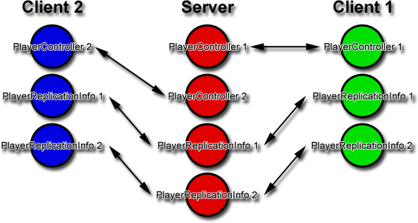
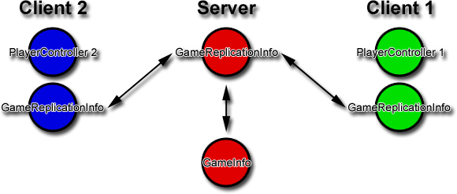
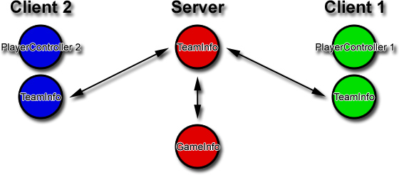

UDN
Search public documentation:
ReplicationInfosCH
English Translation
日本語訳
한국어
Interested in the Unreal Engine?
Visit the Unreal Technology site.
Looking for jobs and company info?
Check out the Epic games site.
Questions about support via UDN?
Contact the UDN Staff
日本語訳
한국어
Interested in the Unreal Engine?
Visit the Unreal Technology site.
Looking for jobs and company info?
Check out the Epic games site.
Questions about support via UDN?
Contact the UDN Staff
Replication Infos（复制信息）
ReplicationInfo
ReplicationInfos是指在所有客户端上进行自动复制的actors。它们提供了客户端和服务器之间的通信途径。
PlayerReplicationInfo
PlayerReplicationInfos是需要的，因为尽管客户端可以和服务器直接进行通信；但是客户端不能直接和其他客户端进行通信。这是因为每个客户端仅存在针对该客户端的PlayerController。但是PlayerReplicationInfo存在于每个客户端上，并且当服务器短的数据变化时它会随之更新。因此，如果玩家需要知道关于另一个玩家的任何信息，那么该玩家仅需要查找那个玩家的PlayerReplicationInfo即可。

Variables(变量)
if (bNetDirty)
当这些变量在客户端和服务器之间存在差异时则复制这些变量。- Score - 玩家的分数。
- Deaths - 玩家死亡的次数.
- PlayerName - 玩家名称。
- Team - 玩家所在团队。
- bAdmin - 玩家是否是团队的管理员？
- bIsSpectator - 该玩家是否是观众?
- bOnlySpectator - 这个玩家能永远是观众吗?
- bWaitingPlayer -这个玩家正在等待进入游戏吗?
- bReadyToPlay - 这个玩家准备好玩游戏了吗?
- StartTime - 当第一次创建玩家复制信息时，服务器上所用掉的时间。
- bOutOfLives - 玩家是否已经死亡?
- UniqueId - 网络用来识别玩家所使用的唯一Id。
if (bNetDirty && !bNetOwner)
当这些变量在客户端和服务器之间存在差异并且客户端没有这个PlayerReplicationInfo 时则复制这些变量。- Ping - 为这个玩家复制压缩的ping。
if (bNetInitial)
当第一次复制更新时复制这些变量。- PlayerID - 玩家的唯一id编号。
- bBot - 该玩家实际上是否是机器人?
- bIsInactive - 判断这个PRI是来自GameInfo的 InactivePRIArray吗?
GameReplicationInfo
因为GameInfos永远都不会被复制到客户端，所以需要GameReplicationInfos。因为客户端仍然需要一些关于GameInfo的信息，所以在服务器和客户端上创建了GameReplicationInfos。因此，无论何时当GameInfo需要更新及需要把这些更新通知给客户端时，GameInfo可以把这些更新放入到GameReplicationInfo中。当客户端的GameReplicationInfo版本更新后，客户端就会具有这些更新。

Variables(变量)
if (bNetDirty)
当这些变量在客户端和服务器之间存在差异时则复制这些变量。- bStopCountDown - 如果该项为真，停止剩余的倒数计时。
- Winner - 游戏的获胜者。
- bMatchHasBegun - 比赛是否正在进行中?
- bMatchIsOver - 比赛是否结束?
if (!bNetInitial && bNetDirty)
这些变量在客户端和服务器之间存在差异但不是第一次复制更新时复制这些变量- RemainingMinute - 在有时间限制的游戏中用于倒数计时时间。
if (bNetInitial)
仅当第一次复制更新时复制这些变量。- GameClass - 服务器的 GameInfo类。
- RemainingTime - 在有时间限制的游戏中用于倒计时的时间。
- ElapsedTime - 在有时间限制的游戏中用于倒计时的时间。
- GoalScore - 当前分数。
- TimeLimit - 这个比赛的限制时间。
- ServerName - 服务器的名称。
TeamInfo
TeamInfos包含了基于团队的游戏所使用的团队结构体的信息，比如夺取旗帜类游戏。和PlayerReplicationInfo很像，它用于和玩家之间进行一般数据通信。

Variables(变量)
if (bNetDirty && Role = Role_Authority)
这些变量在客户端和服务器之间存在差异并且仅当数据源于服务器时复制这些变量- Score - 团队的分数。
if (bNetInitial && Role = Role_Authority)
- TeamName - 团队名称。
- TeamIndex - 团队索引。
什么时候使用复制信息模式?
- 当actors可能不存在于所有的客户端上时。
- GameInfo不存在于客户端上时。
- PlayerController仅存在于拥有它的客户端上。
- 当您想在客户端和客户端之间进行通信时。
- 所有的玩家可以查看它们的团队信息，并在团队之间切换。
结论
ReplicationInfos解决了类的实例仅存在于服务器、客户端或仅存在于一个单独的客户端上的问题。这是为什么多玩家游戏的网络测试必须从头开始的原因。它很容易陷入到所有操作在只有一个单独玩家或一个服务器时可以正常进行但是当涉及到更多的客户端时就不能工作的情况。在设计类时考虑到网络相关的问题对于确保您在稍后的开发中避免很多令人头痛的问题是很好的一步。